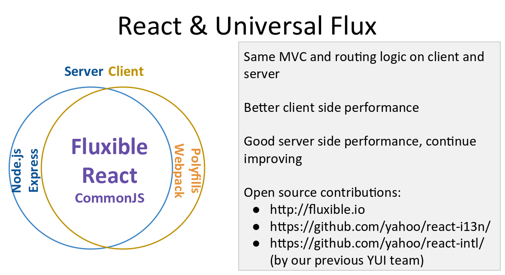

Infrastructure & Performance
<-- Velocity 2015 -->
Presented by Robert Yan
Created with reveal.js
Agnda
- Framework & Performance
- Docker-Based Development Infrastructure
- Intelligent Monitoring
Framework & Performance
Lingyan Zhu

slides
Frameworks -- Big Bang
Frameworks -- Big Bang
Choose a Framework?
- What's important to you and your developers?
What are my application’s main use cases?
- How much data?
- Are there lot of interactions?
- Do I need client navigation?
- And so on...

Yahoo! Front Page's Story

We're Here
 Another talk about React + FluxWhat's Next?
The best way to predict the future is to invent it
-- Alan Kay in 1971, inventor of Smalltalk
We can't predict the future, inventing the future is not that easy... Can we prepare for it?
Docker-Based Development Infrastructure
Sun Yucong

slides

Container Technology
Why Docker
- Self-Sufficient packaging
- Universal API between Host / App
- Foundation for common infrastructure
Micro-services + Docker
Micro-services + Docker
- System Scalability and Developer Productivity
- Refactor and componentize server
- Build the development infrastructure
Challenge of Using Docker in The Architecture
- Resource Management
- Deal with large, complex micro services graph
- Service Discovery / Load Balancing
- Common Infrastructure
Mesos + Marathon
- Distributed
- Failover
- Service Discovery
- Load Balancing
- Resource Management
Containerize
- Boxing App/Service
- Moving Boxes
- More Redundant Boxes

Docker On Cloud
- Development Infrastructure on Private Cloud
- Deployment (e.g. Secure Cloud) on Public Cloud (AWS)
- Consistent Environment for Dev/Test/Prod
- Dev, Test, Build, Deployment, Monitoring in Docker Cluster
- Continuous Integration -> Deployment -> Operation
Container as a Service
Intelligent Monitoring
Qu Xianping
slides